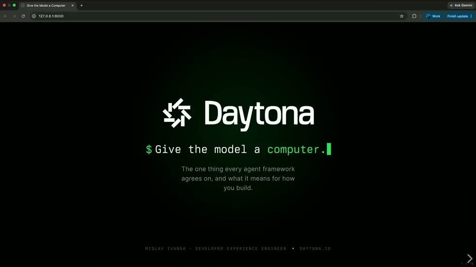

Six competing frameworks, the same three lines of code
Ivanda opened with a short quiz: a @tool(name="run_code") snippet that spins up a sandbox, runs generated code, and tears it down, asking the audience which framework it belonged to. Guesses ranged across LangChain, LangGraph, and Google ADK, and his point was that any of them would fit. Across LangChain, CrewAI, Google ADK, Pydantic AI, OpenAI Agents SDK, and Mastra, the Daytona integration code is almost indistinguishable.
Surface plumbing varies: one framework registers a @tool, another loads an external plugin, and a third subclasses an internal sandbox base class. Underneath every wrapper sit the same three lifecycle calls: create, code_run, and delete. That convergence stands out because these projects are direct competitors that otherwise share almost no design opinions. LangGraph models an agent as a traversable graph, CrewAI treats agents as autonomous role-players, OpenAI's Agents SDK wraps a loop around a model, and Anthropic's Claude Agent SDK ships a packaged runtime with minimal customization, split across Python and TypeScript and divided over whether developers or models steer control flow. When rivals that agree on nothing else land on the same primitive, Ivanda noted, it is a necessity rather than a passing fashion.


“But under the hood, all of these ways speak the three same lines, so it's sandbox creation, running some code or task inside the sandbox, and sandbox deletion.”00:00:05
- Integrating sandboxes across six major agent frameworks comes down to the same three calls: create, run, and delete.
- Competing frameworks disagree on agent abstractions (graphs, crews, loops, packaged runtimes), languages, and control flow.
- Universal convergence among competitors signals an unavoidable infrastructure requirement rather than a trend.
Evidence: transcript 00:00:05, 00:01:58 · watch the six-framework reveal
Why host allowlists and embedded runtimes still expose your machine
Any useful agent eventually needs to run generated scripts, shell commands, package installs, or tests, raising the question of where that execution happens. Ivanda walked through three isolation postures. The first is running on the developer's or server's own machine behind command allowlists, approval prompts, and interception hooks. Most users click "yes" without reading, and allowing python -c quietly hands the model raw socket creation, filesystem mutation, and arbitrary execution. A permission prompt states what the model should run, not what a prompt-injected or misbehaving model can reach.
The second posture moves generated scripts into an embedded engine such as V8 or QuickJS. While that restricts direct filesystem and network calls from the script itself, the subtlety lies in tool bindings: when the sandboxed glue code invokes query_database or send_email, those registered tools execute outside the runtime on the host machine, letting a compromised agent act maliciously through privileged host credentials. Only the third posture, a separate container or microVM reached over an API, keeps execution off your infrastructure so a compromised step never becomes a compromised application; you throw away the tainted VM and boot a fresh one.
“when you allow your cloud agent to run Python command with Python dash C, he can literally open any sockets, modify a file system, execute code, or do basically everything”00:03:28
- Approving an interpreter like
python -cdefeats host command allowlists by unlocking arbitrary sockets and file edits. - Embedded V8 or QuickJS runtimes isolate glue scripts while still running database or email tools on the host.
- A separate microVM or container over an API ensures a compromised step can be discarded without compromising the app.
Evidence: transcript 00:03:28 · watch the three isolation models
In 2026, agent frameworks started deleting their local executors
To show that the ecosystem has already voted on this boundary, Ivanda put up a receipts table of 2026 framework releases. In April 2026, CrewAI removed its local CodeInterpreterTool and deprecated allow_code_execution, pointing users to dedicated sandbox services instead. In July 2026, AG2 1.0 retired its legacy autogen.coding local executors in favor of a sandbox tool class requiring an explicit execution environment.
Other SDKs drew similar lines: the Claude Agent SDK uses OS-level process sandboxing such as Bubblewrap on Linux for Bash commands, OpenAI's Agents SDK introduced SandboxAgent with Docker and hosted sandbox clients while explicitly flagging the risks of local execution, and Mastra's docs tell builders to choose their execution boundary deliberately. Crucially, these frameworks already had optional sandbox integrations; what changed in 2026 is that maintainers started deleting the unsafe local alternatives.
“And you can notice that they are not adding sandboxes, they already had them, but they are deleting all the alternatives”00:07:40
- CrewAI (April 2026) and AG2 1.0 (July 2026) removed built-in local code executors in favor of explicit sandboxes.
- OpenAI Agents SDK, Claude Agent SDK, and Mastra now surface explicit sandbox boundaries or process isolation.
- Frameworks are not merely adding sandbox plugins; they are actively removing host-level execution paths.
Evidence: transcript 00:07:40
One ephemeral tool call grew into fleets of thousands of computers
Alongside stricter isolation, how teams use sandboxes expanded through three distinct stages. Early integrations treated a sandbox as a disposable calculator: spin up a short-lived machine for a single tool call, analyze a CSV or run a snippet, return stdout, and destroy the VM immediately.
As models grew more capable, teams moved the entire agent loop inside the sandbox so it could operate as a persistent runtime with full filesystem, shell, and network access. Most recently, one computer became a thousand: teams fan out thousands of concurrent isolated environments for parallel evaluations, reinforcement learning rollouts, post-training benchmarks, bulk multi-repo refactors, and agents spawning subagents.
“if they can run thousands of these executions environments concurrently, they can do really interesting stuff, especially regarding reinforcement learning, fine-tuning, post-training benchmarks, evals.”00:09:18
- Stage one used ephemeral sandboxes for single-shot code snippets and CSV analysis.
- Stage two moved the whole agent inside the VM as a full-featured workspace runtime.
- Stage three fans out thousands of parallel sandboxes for RL post-training, evals, and subagent fleets.
Evidence: transcript 00:09:18
Most framework decisions are swappable; execution posture locks you in
Developers routinely start new projects by asking which agent framework to pick, which Ivanda called the wrong first question. Almost every axis people agonize over during framework selection can be changed later at manageable cost: switching between two Python or TypeScript frameworks is a bounded refactor, swapping models and prompts takes regression testing, missing observability or memory features can be added via plugins (with cloud durable execution as the one notable architectural exception), and even sandbox vendors are interchangeable because they all speak create, run, and delete.
What you cannot easily swap later is your execution posture: whether code and tools run on the host, in-process, or on a separate computer. Teams that prototype locally write every tool assuming direct access to the application process and local filesystem without separation, then carry that proof-of-concept straight into production until a security incident threatens the product.
“if you're guessing that you'll use first approach, where everything runs locally, then you write all your tools to use your host or app process environment, using your file system without separation and stuff like that.”00:10:16
- Frameworks, models, prompts, plugins (aside from durable execution), and sandbox providers can all be swapped later.
- Local POCs silently couple every custom tool to the host process and unseparated filesystem.
- Retrofitting isolation onto host-coupled tools in production requires rewriting your system architecture.
Evidence: transcript 00:10:16 · watch swappable decisions vs execution lock-in
Pick the execution boundary before you pick the framework
Ivanda closed with a concrete rule of thumb, printed on his final takeaway slide as "Frameworks are opinions. The boundary is a commitment" (and transcribed slightly garbled in the room audio as "framers our opinions and the boundary the commitment"). Before choosing an orchestration library, define an execution interface under your own control that targets a separate computer from day one.
With that boundary fixed up front, untrusted code and tools stay quarantined behind an API you own, security is addressed structurally rather than bolted on with regex filters, and every layer above or below (framework, model, or sandbox provider) stays straightforward to swap as the ecosystem shifts.
“And as I like to say, and the sentence I would maybe like for you all of you to remember out of this talk is, framers our opinions and the boundary the commitment.”00:13:41
- Define your own execution boundary interface before adopting any agent framework.
- Target a separate computer from the first prototype so tools never depend on host state.
- Isolating execution behind a clean interface keeps frameworks, models, and providers swappable.
Evidence: transcript 00:13:41